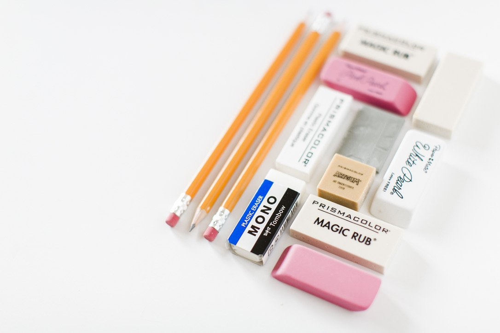
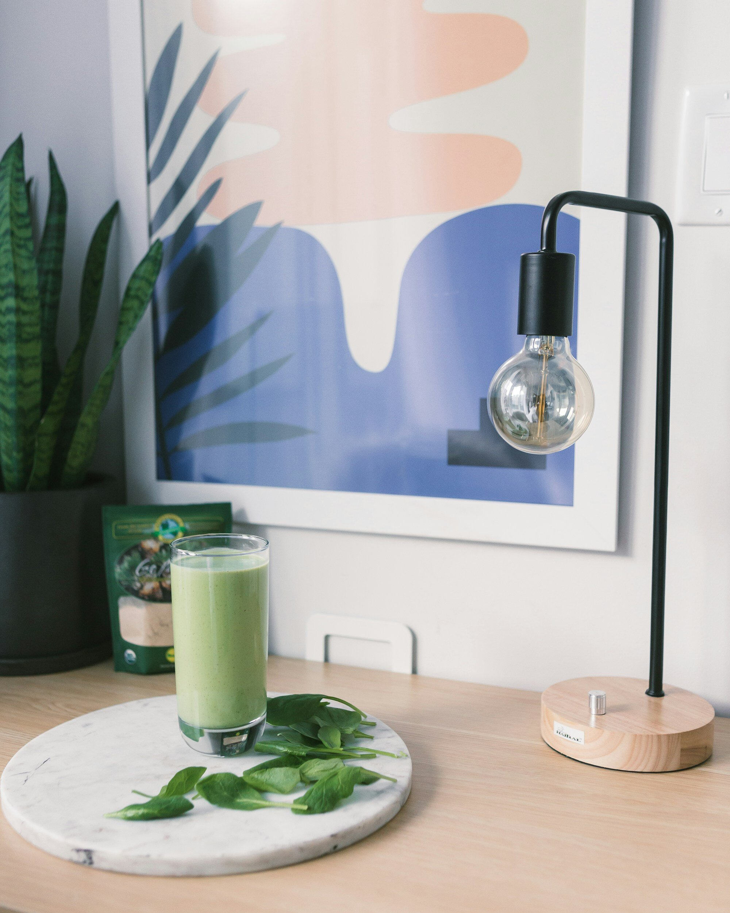
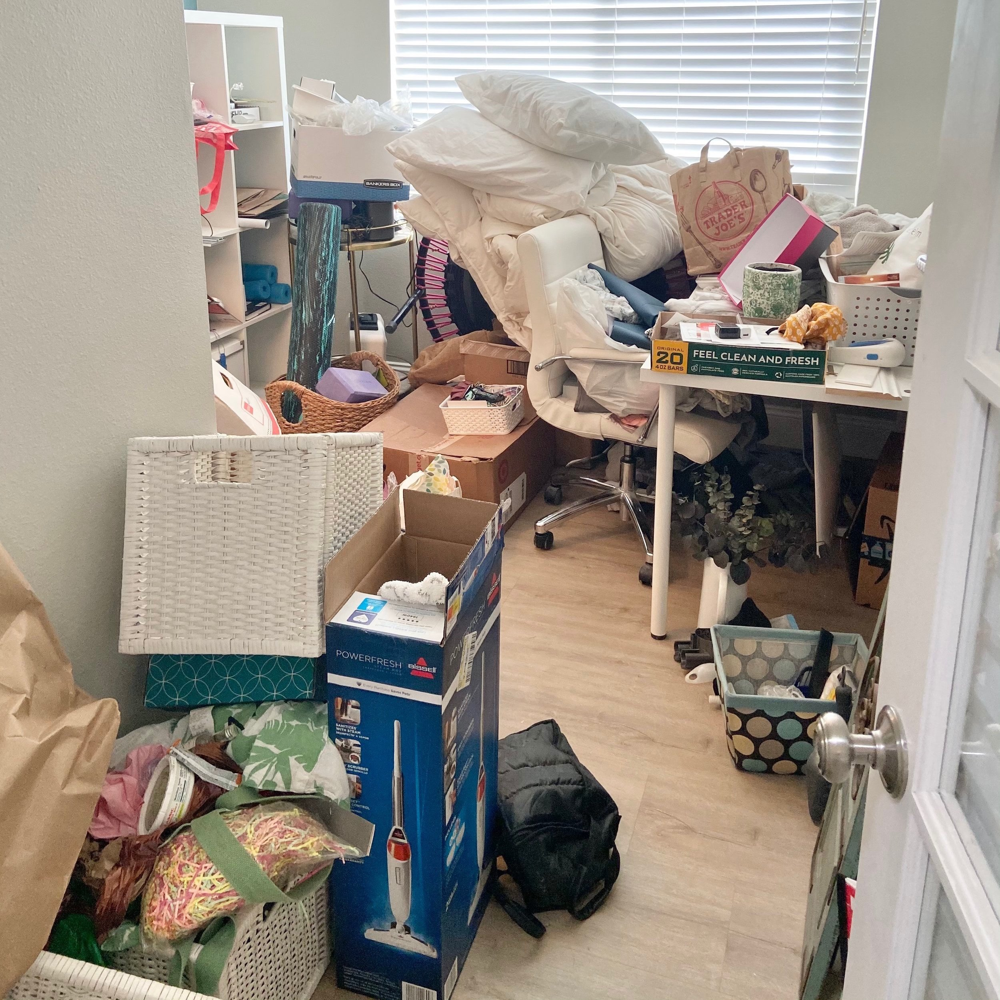
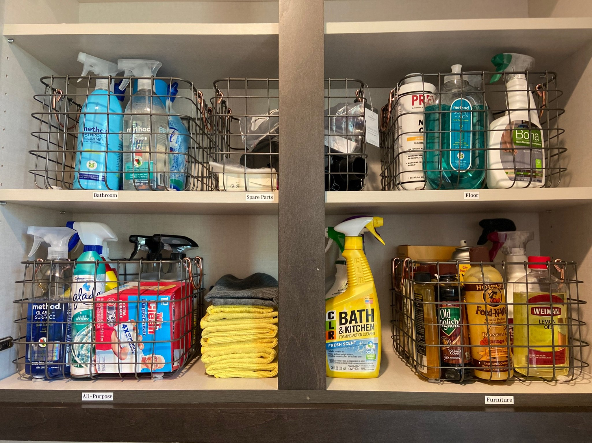
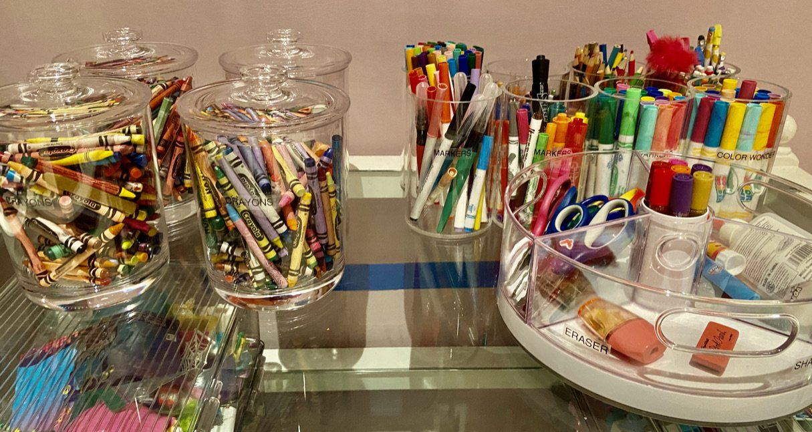
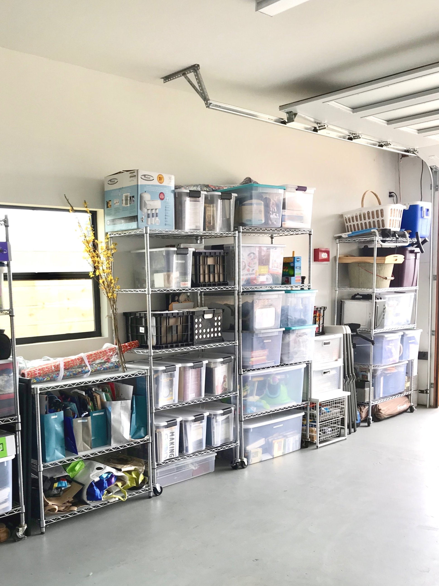
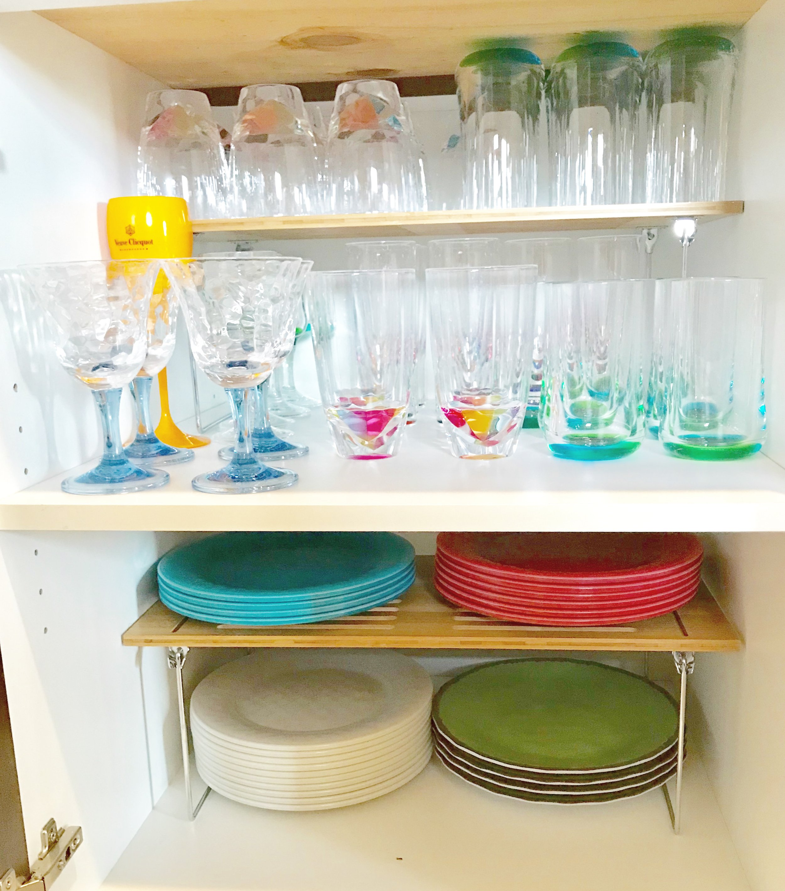
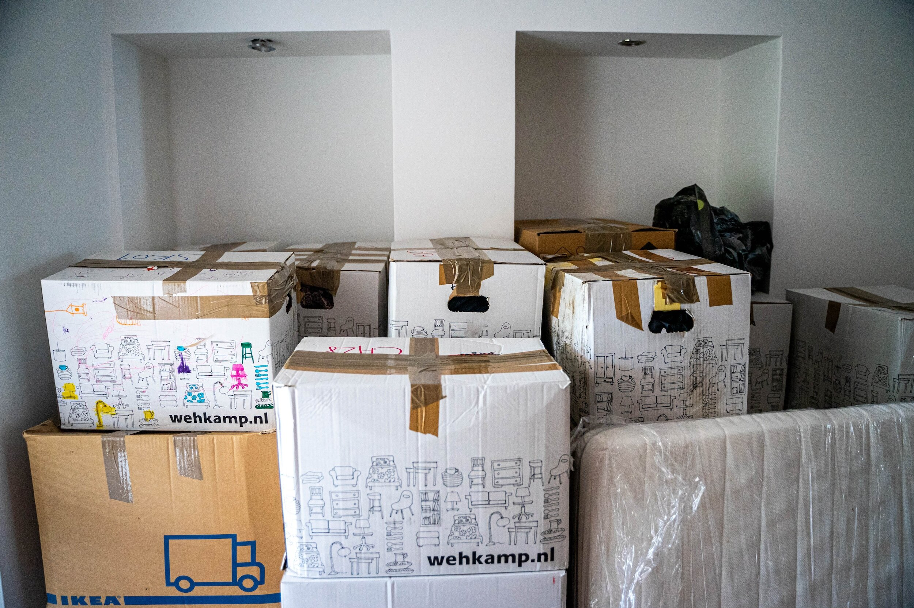

Organizing tips

6 Back-to-School Essentials for Busy Parents
4 Amazon Beauty & Self-Care Products I Actually Use

The Joy of Decluttering: Why Purging Feels So Good

The Hidden Dangers of Clutter: The Cause of Unnecessary Stress and Chaos in Your Home

Tips for Organizing Your Laundry Space

The Effects of Clutter on Mental and Physical Well-Being

Most Common ‘Zones’ for Kitchen Organization

Closet Organizing- Quick Tips and Tricks

Top 3 Back to School Organization Tips
Challenges and Importance of Purging: A Professional Organizer's Perspective

The Life-Changing Impact of Being a Professional Organizer
The Therapeutic Approach to Hoarding: Healing from Within

5 Practical Steps for Parents to Teach Kids Organizing Skills

Who Do We Service?

The Benefits of Hiring a Professional Organizer Yearly

The Mental Benefits of Organizing Your Home and Space
The Importance of Teaching Organization Skills to Children

From Chaos to Clarity: A Guide to Organizing Your Garage

Mastering the Art of Kitchen Organization: A Step-by-Step Guide
